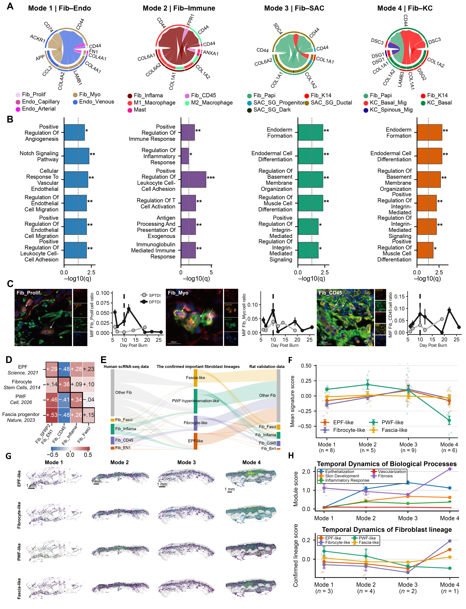

Fibroblast-state context, comparative programs and supporting communication evidence.
Executed supporting analyses and/or archived sources; see panel-specific status
Source data · Panel manifest · Execution report

| Panel | Description | Status |
|---|---|---|
| S4A | (A) Predicted interaction summaries between fibroblast and endothelial, immune, appendage, or keratinocyte compartments across repair modes. | not_run |
| S4B | (B) Enrichment of fibroblast-associated biological processes, displayed as −log10 adjusted significance. | not_run |
| S4C | (C) Representative multiplex imaging and temporal summaries of Fib_Prolif-, Fib_Myo-, and Fib_CD45-associated marker combinations. The displayed panels include KRT5/TOP2A/ACTA2, VIM/TOP2A/ACTA2, and CXCL5/CD45/VIM, respectively. Scale bars, 20 micrometers. | not_run |
| S4D | (D) Comparison of current fibroblast expression programs with published EPF, fibrocyte, pro-regenerative wound fibroblast, and fascia-progenitor signatures. Relevant work includes En1-associated repair 26, inhibition of organ-level regeneration by hyperinnervation 37, and CD201-positive fascia progenitors 23. | not_run |
| S4E | (E) Alluvial correspondence between human expression-defined states, signature families, and rat states. | not_run |
| S4F | (F) RNA signature summaries across repair modes, with the displayed sample counts 8, 5, 9, and 6. | not_run |
| S4G | (G) Spatial signature maps across the four repair modes. Scale bars, 1 mm. The spatial origin is mode-specific. | not_run |
| S4H | (H) Section-level biological-process or signature summaries across modes, with the displayed section counts 3, 4, 2, and 1. | not_run |